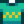

Salade de chou
Sauter à la navigation
Sauter à la recherche
| Salade de chou | ||||||||||||
| C’est léger, frais et très sain. | ||||||||||||
| Information | ||||||||||||
| Source | Cuisine | |||||||||||
| Énergie / Santé |
|
|||||||||||
| Prix de vente |
| |||||||||||
|
| |||||||||||
| Recette | ||||||||||||
| Source de recette |
| |||||||||||
| Ingrédients | ||||||||||||
La Salade de chou est un plat cuisiné. Elle est préparée en utilisant la cuisine de votre maison de ferme améliorée une fois ou avec un Kit de cuisson.
Cadeau
| Réactions des villageois
| |
|---|---|
| Aiment | |
| N'aiment pas | |
| Détestent | |
Paquets
La salade de chou n'est utilisée dans aucun paquet.
Recettes
N'est utilisée dans aucune recette.
Couture
Peut être placée dans la bobine de la Machine à coudre pour créer le T-Shirt. 
Quêtes
La salade de chou n'est utilisée dans aucune quête.
Historique
- 1.4 : Peut maintenant être utilisée en Couture.
- 1.5 : Peut désormais être préparé avec un Kit de cuisson.